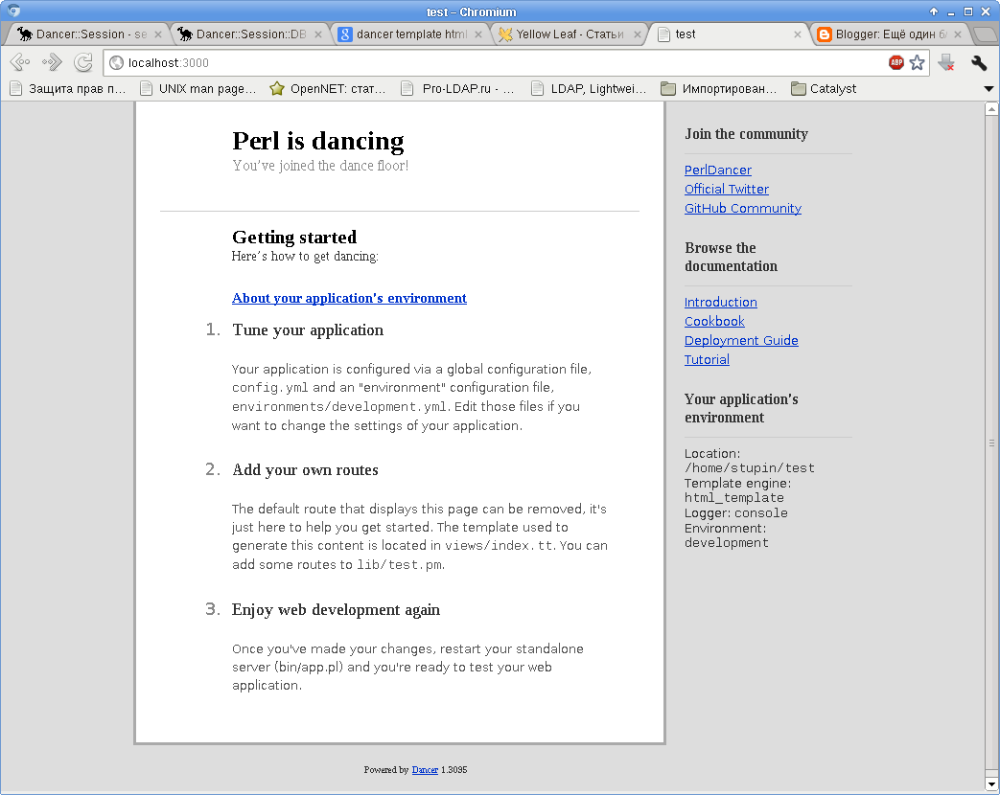
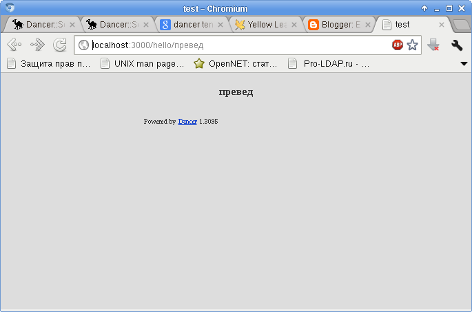

Захотелось немного изучить веб-фреймворк Dancer, т.к. писать с использованием модуля CGI и его компании хоть и можно, но не удобно. Особенно раздражает неудобство в использовании cookie, а ещё больше - неудобство установки или удаления cookie в редиректе. Хотя, конечно, этим всё не ограничивается.
Ставим фреймворк:
# apt-get install libdancer-perl
Создаём каркас будущего приложения под названием test:
$ dancer -a test
Теперь можно перейти в каталог test/bin и запустить оттуда приложение app.pl:
$ cd test/bin $ ./app.pl
Запустится только что созданное приложение test, которое будет ожидать подключений на TCP-порту 3000. Можно открыть в браузере ссылку http://localhost:3000 и увидеть тестовую страницу:
Как вы уже догадались по заголовку заметки, необычное в этом снимке экрана только одно - строчка "Template engine: html_template".
По умолчанию в Dancer'е используется некий "простой" шаблонизатор simple. В качестве альтернативы предлагается использовать template_toolkit, я же хочу воспользоваться html_template, который по сегодняшним временам кому-то может показаться довольно "дубовым".
К сожалению, в репозитории Debian этого модуля нет. Поэтому поставим сначала пакет dh-make-perl:
# apt-get install dh-make-perl
Теперь с его помощью поставим нужный нам Perl-модуль Dancer::Template::HtmlTemplate, соглашаясь при первом запуске на все умолчальные настройки:
# dh-make-perl --install --cpan Dancer::Template::HtmlTemplate
Теперь укажем Dancer'у, что мы хотим использовать этот шаблонизатор в нашем приложении. Для этого закомментируем в файле настроек config.yml в каталоге проекта строчку шаблонизатора simple и добавим строчку с шаблонизатором html_template:
#template: "simple" template: "html_template"
Теперь самое время отредактировать шаблоны в соответствии с правилами выбранного нами шаблонизатора - заменим все строчки типа "<% var %>" на строчки типа "<TMPL_VAR NAME="var">". Шаблоны находятся в каталоге views проекта и имена их файлов оканчиваются расширением ".tt".
Теперь можно снова запустить наше тестовое веб-приложение и увидеть ту самую страницу, снимок которой я привёл выше.
Если заглянуть в исходный текст модуля, то можно увидеть, что опции HTML::Template, используемые при загрузке шаблона, можно настроить всё в том же файле настройки config.yml:
my $ht = HTML::Template->new(
filename => $template,
die_on_bad_params => 0, # Required, as we pass through other params too
%{$self->config}
);
Я использую настройки utf8 и loop_context_vars. Их я и пропишу в файл config.yml:
engines:
html_template:
utf8: 1
loop_context_vars: 1
Теперь создадим в каталоге views шаблон страницы hello, поместив в файл hello.tt следующий текст:
<h3 align="center"> <TMPL_VAR NAME="name"> </h3>
И откроем файл test.pm в каталоге lib, допишем в него обработчик страницы hello:
get '/hello/:name' => sub {
template 'hello', { name => param('name') };
};
Теперь перейдём по ссылке "http://localhost:3000/hello/превед" и увидим следующее:
Страница создана на основе макета, лежащего в файле views/layouts/main.tt и созданного нами шаблона view/hello.tt. Если захочется поменять что-то в макете - можно отредактировать его, можно создать новый макет и положить его рядом. Выбрать используемый макет можно прямо в обработчике. В документации приведены два примера.
Отключение макета на определённой странице:
get '/' => sub {
template 'index', {}, { layout => undef };
};
Или использование указанного макета:
get '/user' => sub {
template 'user', {}, { layout => 'user' };
};
На этом пока всё.